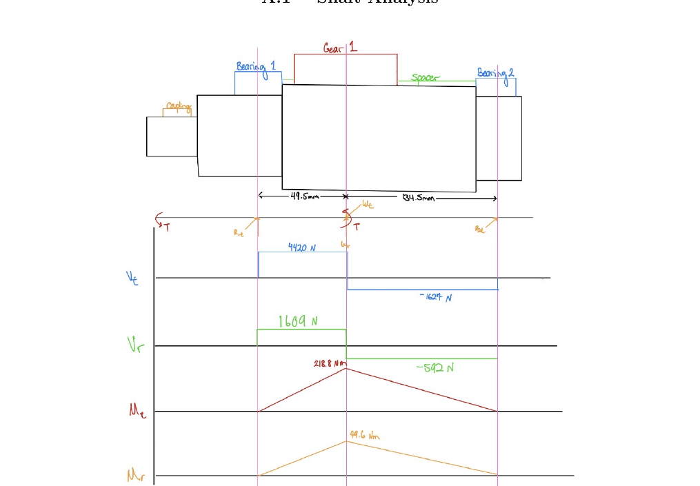
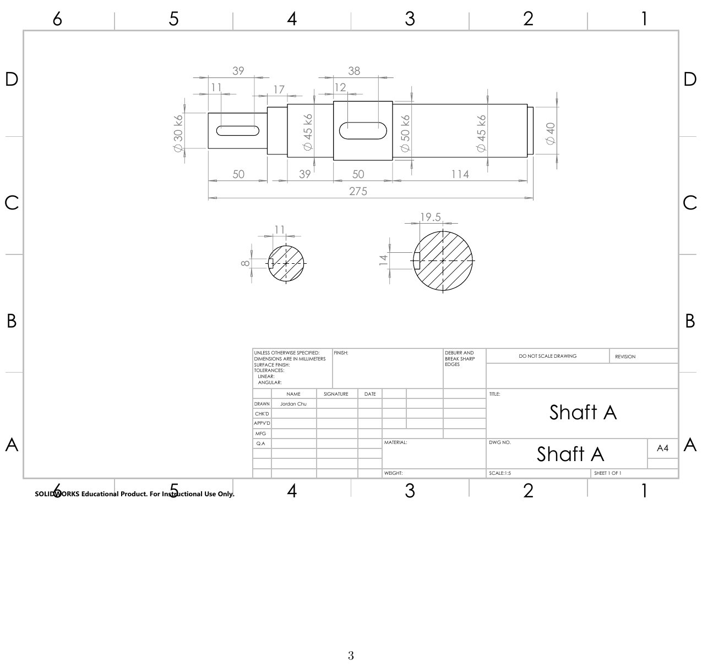
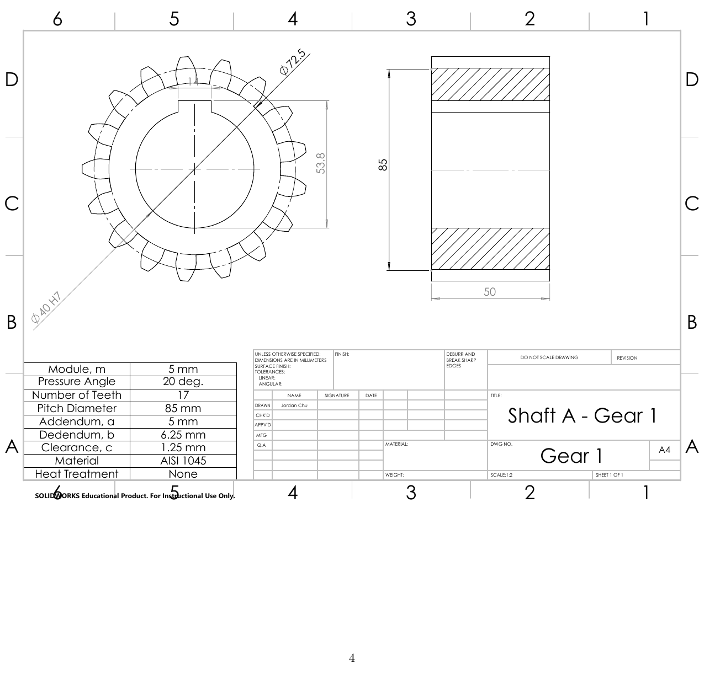
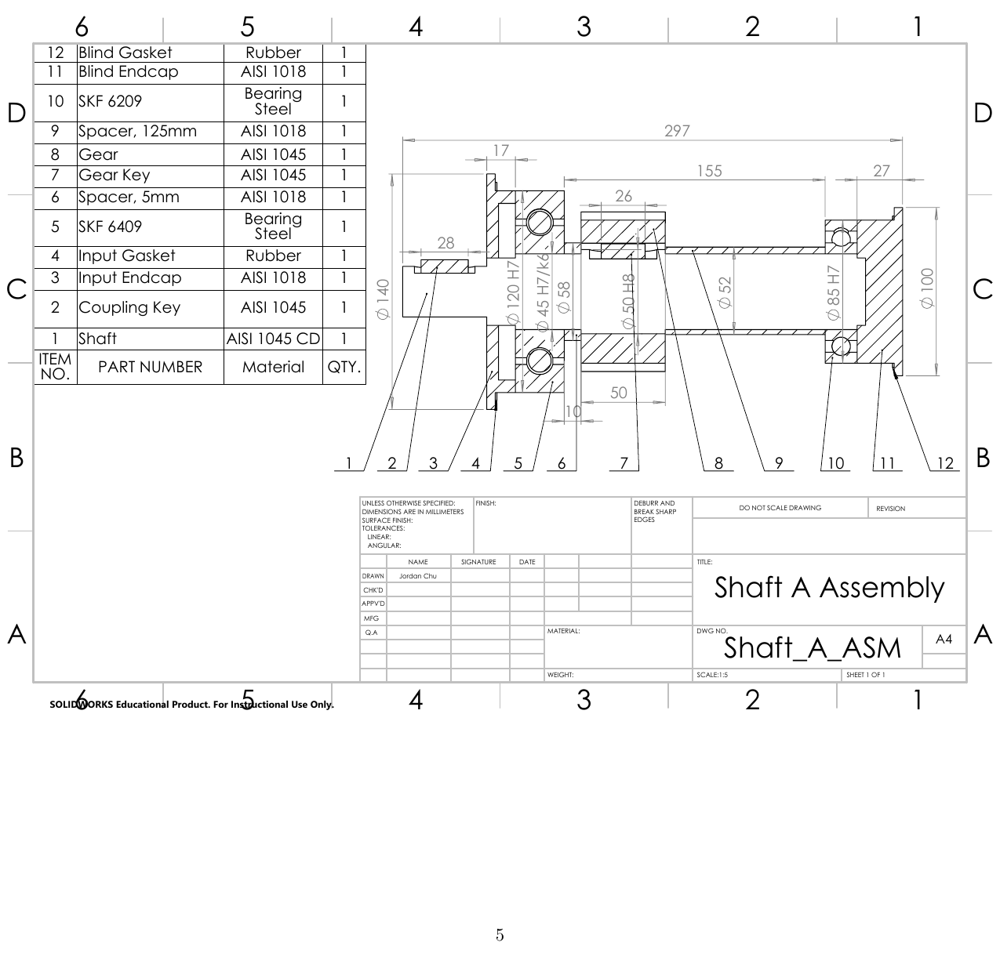

Two-Stage Spur Gear Reducer
Project Overview
As part of a three-person team in ME 315 (Theory of Machines: Design of Elements), I helped design a complete 70 kW two-stage spur gear transmission that reduces a 2600 rpm input to a 299.4 rpm output. I owned the full input-shaft system — Shaft A — end to end: shaft fatigue design, AGMA analysis of the first-stage pinion, bearing selection, and the complete set of dimensioned part and assembly drawings.
Shaft Fatigue Design
Shaft A is driven by the motor through a coupling at 2600 rpm and carries Gear 1, the 17-tooth pinion of the first gear pair. Because the drive starts and stops daily, the transmitted torque fluctuates between zero and its maximum, so it was treated as having equal mean and alternating components.

Two critical cross sections were checked using the full set of Marin endurance-limit factors and modified-Goodman fatigue criteria: the gear keyway (Ø50 mm) and the coupling keyway (Ø30 mm). Although the gear section carries the maximum bending moment, the coupling keyway governs — its smaller diameter drives torsional stress up as 1/d³ — giving governing factors of safety of 1.91 (Goodman) and 2.29 (yield). Both exceed the required minimum of 1.3, so the shaft has infinite life.

AGMA Gear Analysis
The 17-tooth AISI 1045 pinion (module 5, 20° pressure angle, teeth induction-hardened to ~450 HB) was analyzed with the full AGMA method for both bending and contact (pitting) fatigue at 99% reliability, including dynamic, load-distribution, and stress-cycle factors. The result: a bending factor of safety of 2.72 and a contact factor of safety of 2.14, both with infinite life.

Bearing Selection
Rather than defaulting to identical bearings, each was sized independently to its actual load. Because the gear sits close to the input-side bearing, that bearing carries nearly three times the radial load of the far bearing — so an SKF 6409 was selected near the gear and a smaller SKF 6209 at the far end, both with a Ø45 bore so the shaft's bearing seats stay a single diameter. L10 life calculations gave 27,100 and 45,200 hours respectively, comfortably above the 14,560-hour design requirement, and a 5-year maintenance and replacement plan was set for the transmission.
CAD & Documentation
I modeled the complete shaft system in SolidWorks and produced dimensioned part and assembly drawings with ISO fits (k6 bearing and gear seats, H7 housing bores), keyway details, and a ballooned 12-item bill of materials covering the shaft, gear, bearings, spacers, keys, endcaps, and gaskets. All analysis was documented in a full LaTeX appendix.
